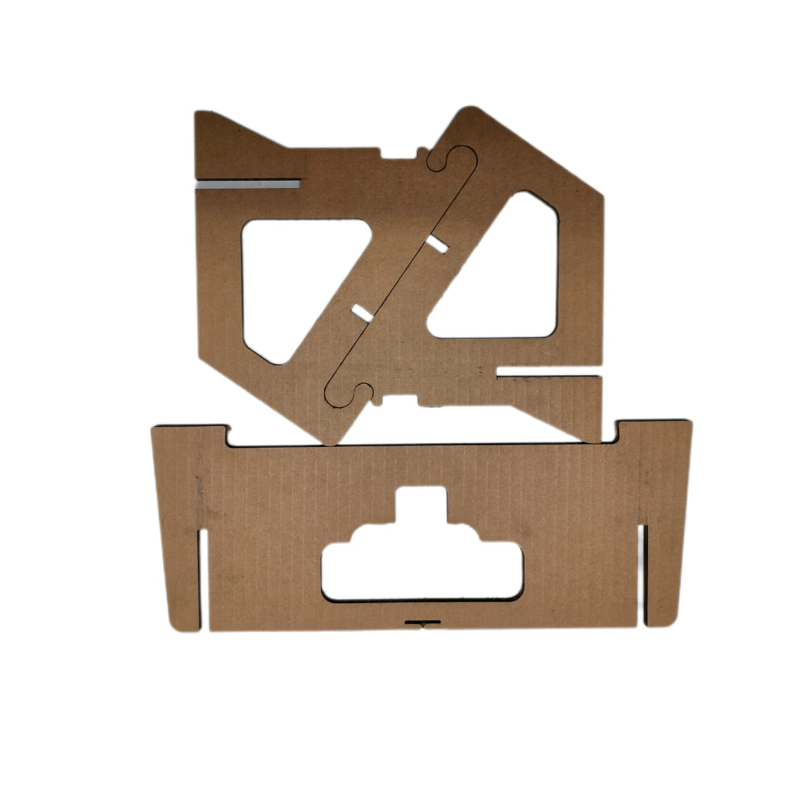
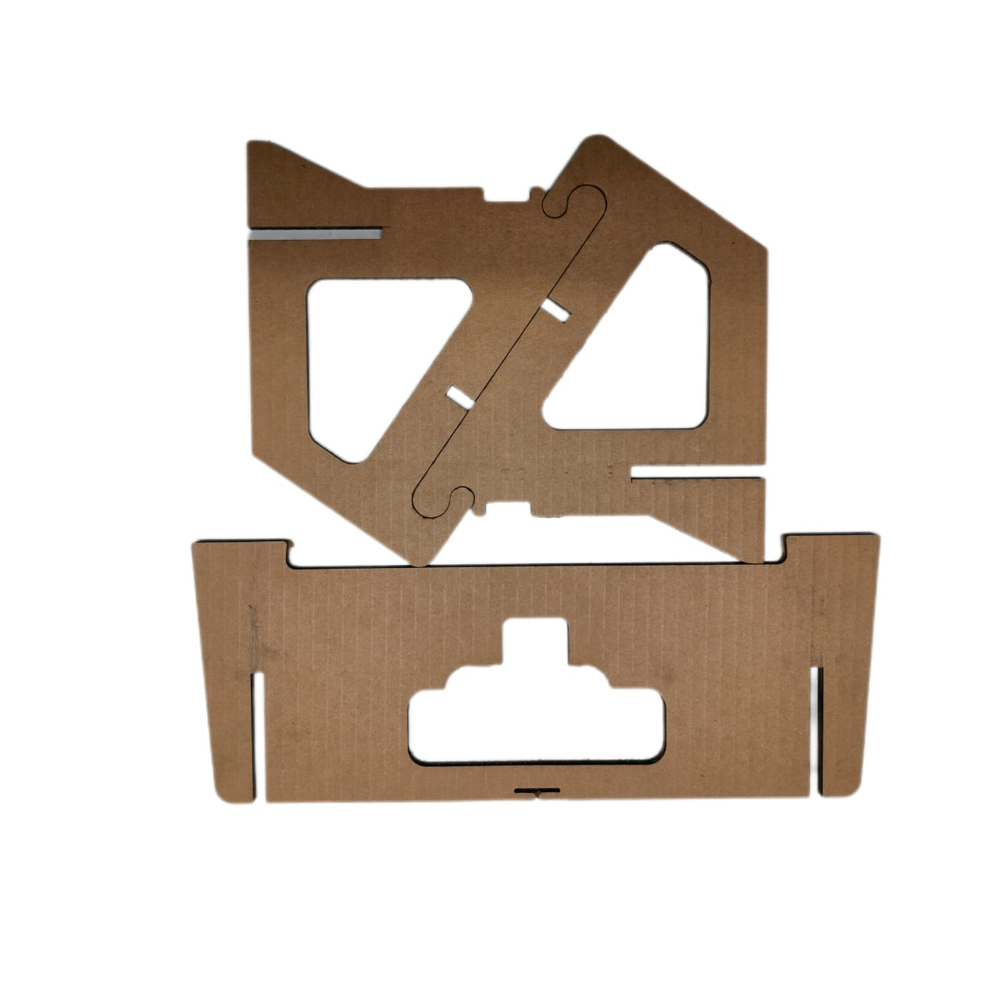
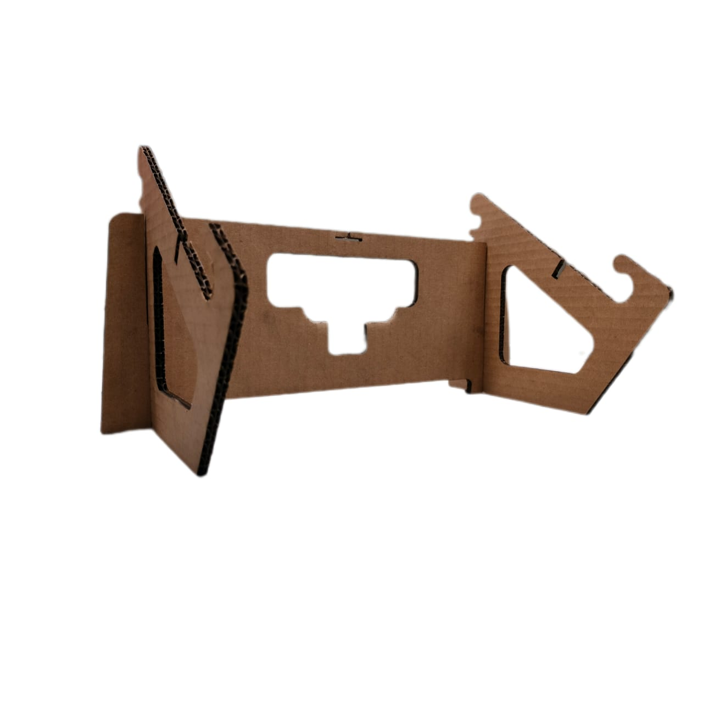

laser cutting

A laser cutting machine is a powerful tool used in various industries for precision cutting of materials. Using a high-powered laser beam, these machines can cut through a wide range of materials with exceptional accuracy and speed. From metals to plastics, wood, and even textiles, laser cutting machines offer versatility and efficiency in manufacturing processes. At the heart of a laser cutting machine is a laser generator that produces a concentrated beam of coherent light. This beam is directed through a series of mirrors and lenses to the cutting head, where it is focused into a small point. The intense heat generated by the laser beam vaporizes or melts the material, creating a clean and precise cut. One of the key advantages of laser cutting is its ability to cut complex shapes with intricate details. Traditional cutting methods such as sawing or milling are often limited in their ability to produce intricate designs, but laser cutting machines excel in this regard. Whether it's intricate patterns for jewelry, precise components for electronics, or intricate decorations for signage, laser cutting offers unmatched precision and flexibility.
Machine

DAY 1
GROUP NO.4
Group member:-
1: ROHAN KHANDAR
2: SWAYAM DHAMODE
3: RAKESH LANDE
4: PARIMAL RAUT
On Day 1 of learning basic and Introduction of laser cutting Machine, I likely grasped fundamental concepts essential for designing. I have learned how to structure content using FUSION 360 SOFTWARE elements . Additionally, I have explored virous design for styling, understanding how to use selectors, properties, and values . By combining fusion 360 for designing structure and laser machine for cutting, I can create visually appealing and well-organized design on a virous materials. Practice and experimentation will reinforce these foundational skills as I progress in learning journey
DAY2
MATERIALS FOR LASER CUTTING
- Introduction to materials suitable for laser cutting (cardboard, wood, acrylic, metal, etc.)
- Discussion on the properties of various materials and their interaction with lasers .
- Considerations for material thickness, density, and cutting parameters.
- Hands-on demonstration of cutting different materials using laser technology.

product on cardboard

DAY3
Safety is a crucial consideration when working with laser cutting machines due to the high-intensity laser beams involved. Enclosures and safety interlocks are typically employed to prevent accidental exposure to the laser beam, and operators are required to wear appropriate protective equipment such as safety glasses. In summary, laser cutting machines are indispensable tools in modern manufacturing and fabrication processes. With their ability to cut complex shapes with precision, versatility in handling a wide range of materials, and high levels of automation and accuracy, laser cutting machines have revolutionized industries ranging from aerospace and automotive to electronics and jewelry making. As technology continues to advance, we can expect to see further improvements in laser cutting capabilities, opening up new possibilities for innovation and creativity.
DAY4
laptop stand
 

product after laser cutting
DAY5
PROJECT SHOWCASE AND REFLECTION
- Presentation of projects created during the module.
- Reflection on the learning process, challenges faced, and lessons learned.
- Discussion on potential applications of laser cutting in various industries.
- Recap of key takeaways and resources for further exploration of laser cutting technology.
DAY6
ADVANCED CAD TECHNIQUES
- Exploring more complex design techniques for laser cutting.
- Introduction to nesting parts to optimize material usage.
- Incorporating text, images, and geometric features into laser cutting designs.
- Troubleshooting common design issues and refining designs for production.
Another benefit of laser cutting is its high level of automation and accuracy. Computer numerical control (CNC) systems are commonly used to control the movement of the cutting head, allowing for precise positioning and repeatable cuts. This level of automation not only improves efficiency but also reduces the likelihood of human error, resulting in consistent quality across production runs. Another benefit of laser cutting is its high level of automation and accuracy. Computer numerical control (CNC) systems are commonly used to control the movement of the cutting head, allowing for precise positioning and repeatable cuts. This level of automation not only improves efficiency but also reduces the likelihood of human error, resulting in consistent quality across production runs. Laser cutting machines are also capable of cutting a wide range of materials with varying thicknesses. Metals such as steel, aluminum, and titanium can be cut with ease, as can non-metallic materials like plastics, wood, acrylics, and composites. This versatility makes laser cutting machines invaluable in industries ranging from automotive and aerospace to electronics, signage, and jewelry making. In addition to cutting, laser cutting machines can also perform other operations such as engraving, marking, and etching By adjusting the power and intensity of the laser beam, users can create shallow engravings or markings on the surface of the material without cutting all the way through. This capability is often used for adding logos, serial numbers, or decorative patterns to finished products.